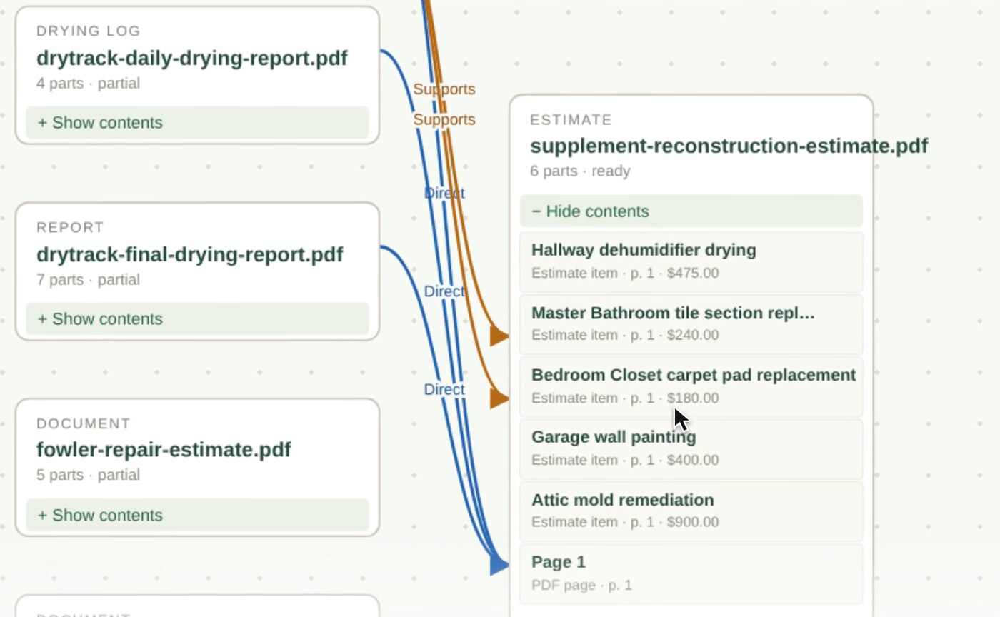

Auric Software
Prism modernizes restoration workflows
Auric Software is a software company founded by three software engineers from UC San Diego. Prism is our product for restoration companies.
Email the foundersWhat we do
What Prism does
When an insurer asks why an item is on your estimate, the answer is spread across reports, receipts, and photos. Prism reads every file in a job and connects them, and each connection links back to its source page.

-
Consolidate information
All your jobs in one place. Upload a job’s estimates, reports, receipts, and photos, and Prism shows how every file connects.
-
Easy to format
Your files stay in your format. Prism reads PDFs, including scanned pages, and JPEG or PNG photos, and makes their contents searchable.
-
No-friction integration
Upload the files your team already produces. You don’t have to change how you create job documents or re-enter anything.

Contact
Interested in Prism? Write to the founders
Prism hasn’t launched yet. If you work at a restoration company, email us to join the launch list or to tell us how your team handles job files today. Your email goes straight to the three of us.
founders@auricsoftware.com